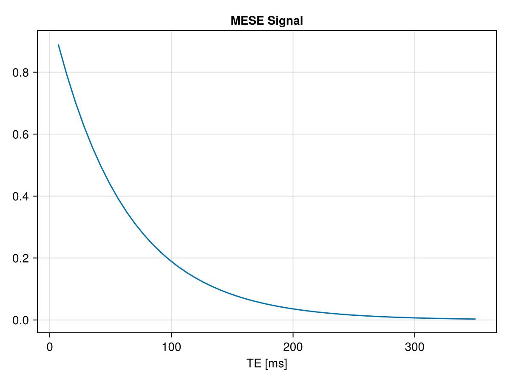
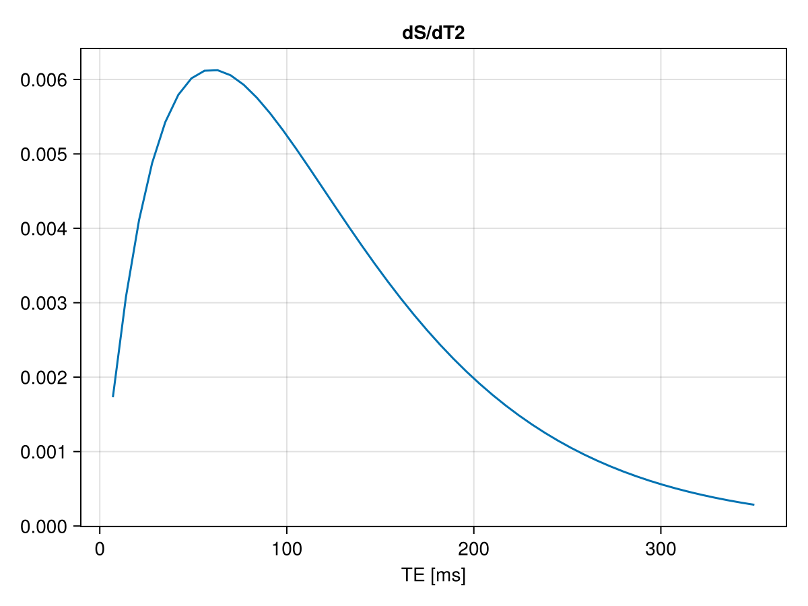
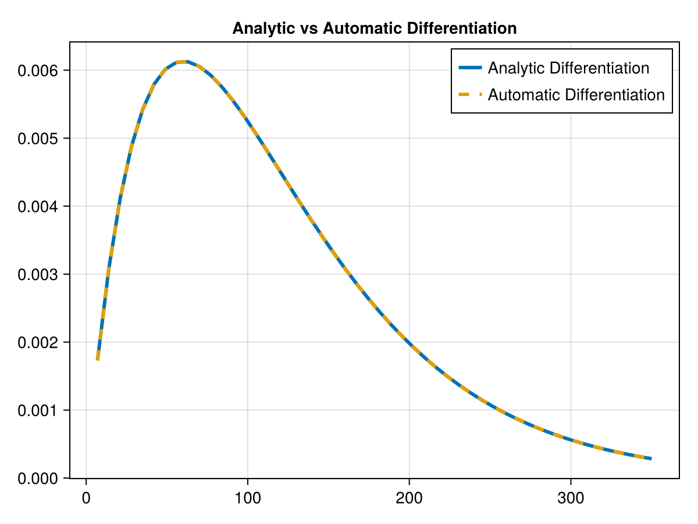
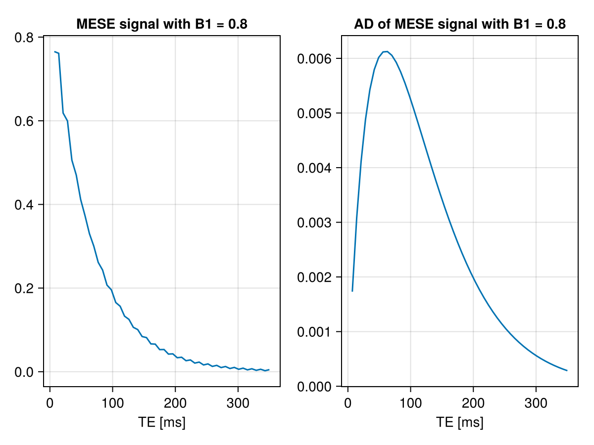

Automatic differentiation
This page shows how to use Automatic Differentiation in combination with an EPG simulation.
The AD package tested is ForwardDiff.jl, maybe it works with others with some minor modification to the following code.
Load package
using EPGsim, ForwardDiff, CairoMakieBuilding signal function
function MESE_EPG(T2,T1,TE,ETL,delta)
T = eltype(complex(T2))
E = EPGStates([T(0.0)],[T(0.0)],[T(1.0)])
echo_vec = Vector{Complex{eltype(T2)}}()
epgRotation!(E,pi/2*delta, pi/2)
# loop over refocusing-pulses
for i = 1:ETL
epgDephasing!(E,1)
epgRelaxation!(E,TE,T1,T2)
epgRotation!(E,pi*delta,0.0)
epgDephasing!(E,1)
push!(echo_vec,E.Fp[1])
end
return abs.(echo_vec)
end;MESE_EPG (generic function with 1 method)ForwardDiff use a specific type : Dual <: Real. The target function must be written generically enough to accept numbers of type T<:Real as input (or arrays of these numbers).
We also need to create an EPGStates that is of that type. We need to force it to be complex :
T = eltype(complex(T2))
E = EPGStates([T(0.0)],[T(0.0)],[T(1.0)])Define parameters for simulation and run it
T2 = 60.0
T1 = 1000.0
TE = 7
ETL = 50
deltaB1 = 1
TE_vec = range(TE,TE*ETL,ETL)
amp = MESE_EPG(T2,T1,TE,ETL,deltaB1)
lines(TE_vec,abs.(amp),axis =(;title = "MESE Signal", xlabel="TE [ms]"))
As expected, we get a standard T2 decaying exponential curve :
\[S(TE) = exp(-TE/T_2)\]
We can analytically derive the equation according to $T_2$ :
\[\frac{\partial S}{\partial T_2} = \frac{TE}{T_2^2} exp(-TE/T_2)\]
which give the following curves:
df = TE_vec .* exp.(-TE_vec./T2)./(T2^2)
lines(TE_vec,abs.(df),axis =(;title = "dS/dT2", xlabel="TE [ms]"))
Find the derivative with Automatic Differentiation
Because we want to obtain the derivate at multiple time points (TE), we will use ForwardDiff.jacobian :
j = ForwardDiff.jacobian(x -> MESE_EPG(x,T1,TE,ETL,deltaB1),[T2])50×1 Matrix{Float64}:
0.0017303256658100462
0.0030795705357541505
0.004110680523359161
0.004877359552123769
0.005425341694986568
0.005793495210899777
0.0060147800749004825
0.006117077880178194
0.006123910609445216
0.0060550626872282855
⋮
0.0006081376174588203
0.0005540555938388994
0.0005045101119798131
0.0004591578599283705
0.00041767612532404326
0.0003797624216267488
0.00034513394687173967
0.0003135269163676083
0.0002846958036628789Let's compare it to the analytical equation :
f=Figure()
ax = Axis(f[1,1],title ="Analytic vs Automatic Differentiation")
lines!(ax,TE_vec,abs.(df),label = "Analytic Differentiation",linewidth=3)
lines!(ax,TE_vec,abs.(vec(j)),label = "Automatic Differentiation",linestyle=:dash,linewidth=3)
axislegend(ax)
f
Of course, in that case we don't really need the AD possibility. But if we reduce the B1+ value the equation becomes complicated enough and might lead to error during derivation if we don't use AD.
deltaB1 = 0.8
amp = MESE_EPG(T2,T1,TE,ETL,deltaB1)
j = ForwardDiff.jacobian(x -> MESE_EPG(x,T1,TE,ETL,deltaB1),[T2])
f = Figure()
ax = Axis(f[1,1], title = "MESE signal with B1 = $(deltaB1)",xlabel="TE [ms]")
lines!(ax,TE_vec,abs.(amp))
ax = Axis(f[1,2], title = "AD of MESE signal with B1 = $(deltaB1)",xlabel="TE [ms]")
lines!(ax,TE_vec,df)
f
Differentiation along multiple variables
If we want to obtain the derivation along T1 and T2 we need to change the EPG_MESE function. The function should take as input a vector containing T2 and T1 (here noted T2/T1) :
function MESE_EPG2(T2T1,TE,ETL,delta)
T2,T1 = T2T1
T = complex(eltype(T2))
E = EPGStates([T(0.0)],[T(0.0)],[T(1.0)])
echo_vec = Vector{Complex{eltype(T2)}}()
epgRotation!(E,pi/2*delta, pi/2)
##loop over refocusing-pulses
for i = 1:ETL
epgDephasing!(E,1)
epgRelaxation!(E,TE,T1,T2)
epgRotation!(E,pi*delta,0.0)
epgDephasing!(E,1)
push!(echo_vec,E.Fp[1])
end
return abs.(echo_vec)
end
j2 = ForwardDiff.jacobian(x -> MESE_EPG2(x,TE,ETL,deltaB1),[T2,T1])50×2 Matrix{Float64}:
0.00148849 0.0
0.00267849 1.01626e-6
0.0036074 3.11376e-9
0.00424856 1.4929e-6
0.0048583 2.1588e-7
0.00505738 1.54224e-6
0.00547205 4.77635e-7
0.0053872 1.48187e-6
0.00561831 5.69176e-7
0.00541662 1.50582e-6
⋮
0.000653143 6.78441e-7
0.000604549 -4.24125e-7
0.000549208 6.53926e-7
0.000506577 -4.35364e-7
0.000459283 6.24792e-7
0.000424782 -4.38279e-7
0.000383105 5.96601e-7
0.000354974 -4.40793e-7
0.00032019 5.75211e-7Here we can see that the second column corresponding to T1 is equal to 0 which is expected for a MESE sequence and the derivative along T2 gives the same results :
j2[:,1] ≈ vec(j)trueReproducibility
This page was generated with the following version of Julia:
using InteractiveUtils
io = IOBuffer();
versioninfo(io);
split(String(take!(io)), '\n')14-element Vector{SubString{String}}:
"Julia Version 1.12.6"
"Commit 15346901f00 (2026-04-09 19:20 UTC)"
"Build Info:"
" Official https://julialang.org release"
"Platform Info:"
" OS: Linux (x86_64-linux-gnu)"
" CPU: 4 × AMD EPYC 7763 64-Core Processor"
" WORD_SIZE: 64"
" LLVM: libLLVM-18.1.7 (ORCJIT, znver3)"
" GC: Built with stock GC"
"Threads: 1 default, 1 interactive, 1 GC (on 4 virtual cores)"
"Environment:"
" JULIA_PKG_SERVER_REGISTRY_PREFERENCE = eager"
""And with the following package versions
import Pkg; Pkg.status()Status `~/work/EPGsim.jl/EPGsim.jl/docs/Project.toml`
[13f3f980] CairoMakie v0.15.12
[e30172f5] Documenter v1.17.0
[b6a82cc1] EPGsim v0.2.0 `~/work/EPGsim.jl/EPGsim.jl`
[f6369f11] ForwardDiff v1.4.1
[98b081ad] Literate v2.21.0
[b77e0a4c] InteractiveUtils v1.11.0